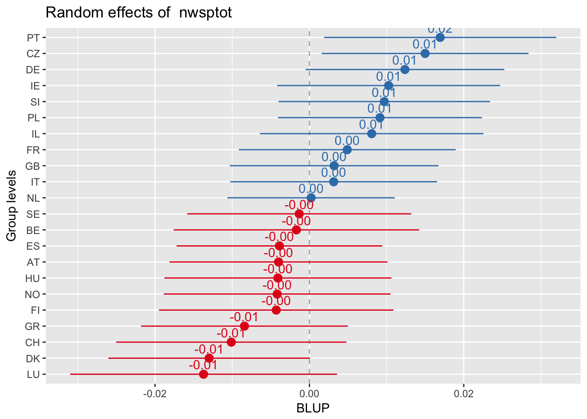
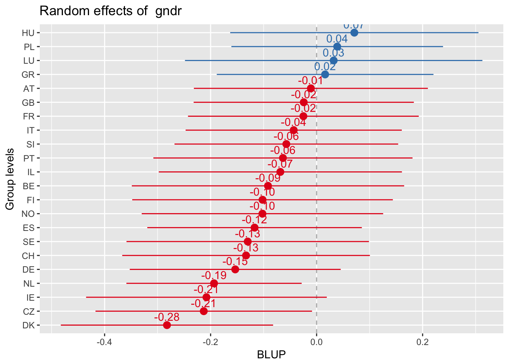
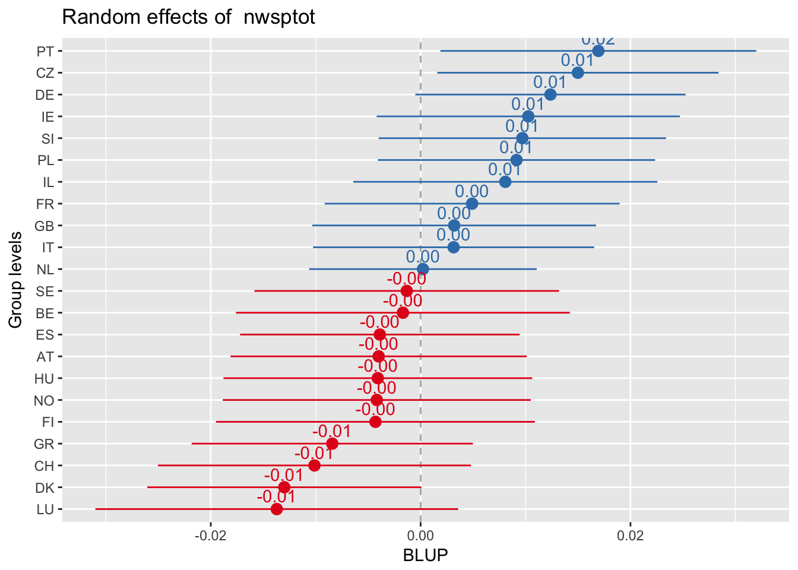
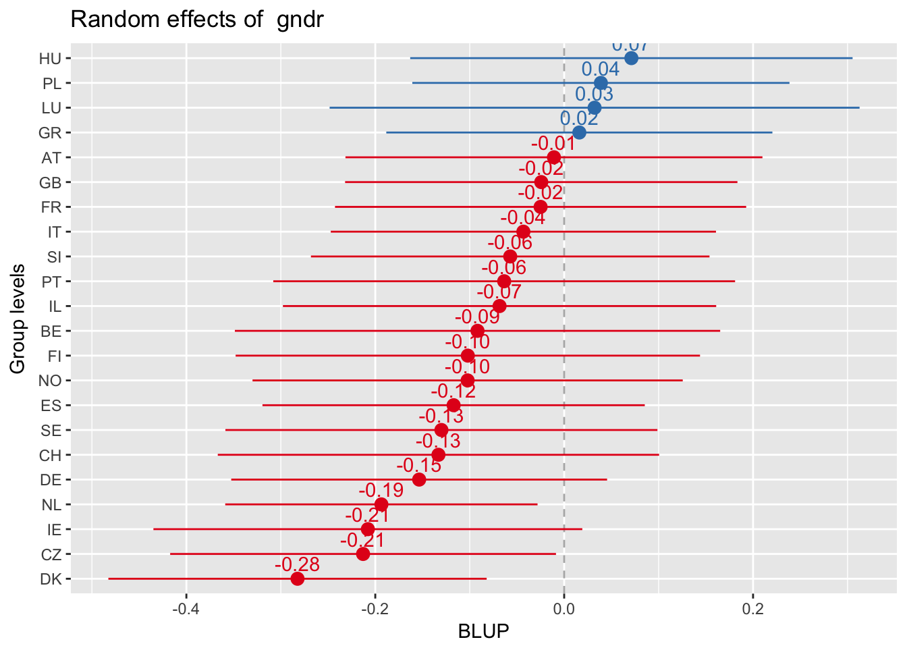
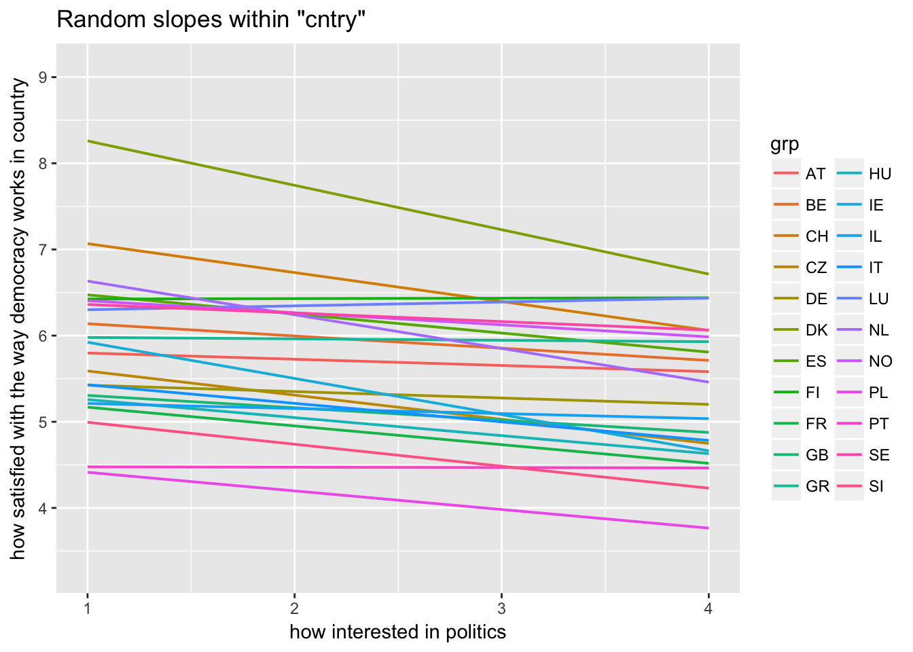
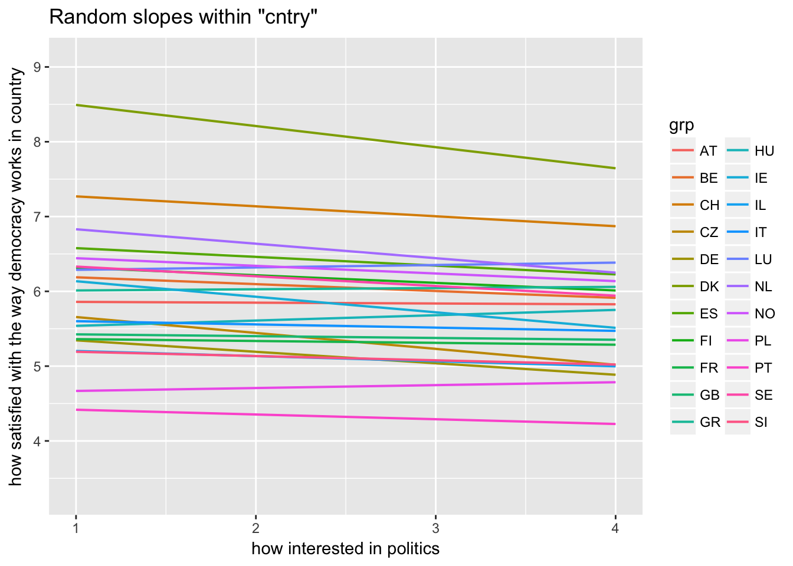
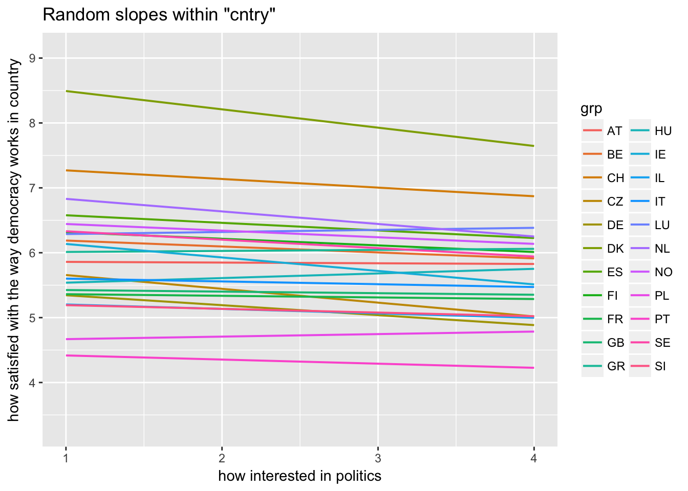

3. Random Coefficient Model
3.1 Without gender variable
Models
Stata
use "../data/ess50prep.dta", clear
xtmixed stfdem polintr nwsptot || cntry: polintr nwsptot, cov(unstructured)
estat icc
. use "../data/ess50prep.dta", clear
.
. xtmixed stfdem polintr nwsptot || cntry: polintr nwsptot, cov(unstructured)
Performing EM optimization:
Performing gradient-based optimization:
Iteration 0: log likelihood = -24343.339
Iteration 1: log likelihood = -24342.86
Iteration 2: log likelihood = -24342.858
Computing standard errors:
standard-error calculation failed
Mixed-effects ML regression Number of obs = 10,977
Group variable: cntry Number of groups = 22
Obs per group:
min = 46
avg = 499.0
max = 1,544
Wald chi2(2) = 41.94
Log likelihood = -24342.858 Prob > chi2 = 0.0000
------------------------------------------------------------------------------
stfdem | Coef. Std. Err. z P>|z| [95% Conf. Interval]
-------------+----------------------------------------------------------------
polintr | -.2418052 .0385597 -6.27 0.000 -.3173807 -.1662297
nwsptot | .0075553 .0177033 0.43 0.670 -.0271425 .0422531
_cons | 6.06071 .2056077 29.48 0.000 5.657726 6.463694
------------------------------------------------------------------------------
------------------------------------------------------------------------------
Random-effects Parameters | Estimate Std. Err. [95% Conf. Interval]
-----------------------------+------------------------------------------------
cntry: Unstructured |
sd(polintr) | .1269699 . . .
sd(nwsptot) | .0058373 . . .
sd(_cons) | .8789842 . . .
corr(polintr,nwsptot) | .6191228 . . .
corr(polintr,_cons) | -.5714132 . . .
corr(nwsptot,_cons) | -.9982364 . . .
-----------------------------+------------------------------------------------
sd(Residual) | 2.212509 . . .
------------------------------------------------------------------------------
LR test vs. linear model: chi2(6) = 1099.26 Prob > chi2 = 0.0000
Note: LR test is conservative and provided only for reference.
. estat icc
Conditional intraclass correlation
------------------------------------------------------------------------------
Level | ICC Std. Err. [95% Conf. Interval]
-----------------------------+------------------------------------------------
cntry | .136316 0 .136316 .136316
------------------------------------------------------------------------------
Note: ICC is conditional on zero values of random-effects covariates.R
First: Save Model (like Stata’s est store)
multi3 <- lmer(stfdem ~ polintr + nwsptot + (1 + polintr + nwsptot |cntry), data = ess, REML = FALSE)1 + is not necessarily needed because random coefficient models imply that the intercept is also random
Then: Inspect model
tidy(multi3)glance(multi3)icc(multi3)##
## Linear mixed model
## Family: gaussian (identity)
## Formula: stfdem ~ (1 + polintr + nwsptot | cntry)
##
## ICC (cntry): 0.1849943.2 With gender variable
Model
Stata
set maxiter 20
use "../data/ess50prep.dta", clear
xtmixed stfdem || cntry: polintr nwsptot gndr, cov(unstructured)
. set maxiter 20
. use "../data/ess50prep.dta", clear
.
. xtmixed stfdem || cntry: polintr nwsptot gndr, cov(unstructured)
Performing EM optimization:
Performing gradient-based optimization:
Iteration 0: log likelihood = -24320.636
Iteration 1: log likelihood = -24320.137
Iteration 2: log likelihood = -24320.135 (not concave)
Iteration 3: log likelihood = -24320.135 (not concave)
Iteration 4: log likelihood = -24320.135 (not concave)
Iteration 5: log likelihood = -24320.135 (not concave)
Iteration 6: log likelihood = -24320.135 (not concave)
Iteration 7: log likelihood = -24320.135 (not concave)
Iteration 8: log likelihood = -24320.135 (not concave)
Iteration 9: log likelihood = -24320.135 (not concave)
Iteration 10: log likelihood = -24320.135 (not concave)
Iteration 11: log likelihood = -24320.135 (not concave)
Iteration 12: log likelihood = -24320.135 (not concave)
Iteration 13: log likelihood = -24320.135 (not concave)
Iteration 14: log likelihood = -24320.135 (not concave)
Iteration 15: log likelihood = -24320.135 (not concave)
Iteration 16: log likelihood = -24320.135 (not concave)
Iteration 17: log likelihood = -24320.135 (not concave)
Iteration 18: log likelihood = -24320.135 (not concave)
Iteration 19: log likelihood = -24320.135 (not concave)
Iteration 20: log likelihood = -24320.135 (not concave)
convergence not achieved
Computing standard errors:
standard-error calculation failed
Mixed-effects ML regression Number of obs = 10,963
Group variable: cntry Number of groups = 22
Obs per group:
min = 46
avg = 498.3
max = 1,544
Wald chi2(0) = .
Log likelihood = -24320.135 Prob > chi2 = .
------------------------------------------------------------------------------
stfdem | Coef. Std. Err. z P>|z| [95% Conf. Interval]
-------------+----------------------------------------------------------------
_cons | 5.413475 .15805 34.25 0.000 5.103703 5.723247
------------------------------------------------------------------------------
------------------------------------------------------------------------------
Random-effects Parameters | Estimate Std. Err. [95% Conf. Interval]
-----------------------------+------------------------------------------------
cntry: Unstructured |
sd(polintr) | .2580515 . . .
sd(nwsptot) | .0113277 . . .
sd(gndr) | .1666332 . . .
sd(_cons) | 1.186181 . . .
corr(polintr,nwsptot) | -.0364619 . . .
corr(polintr,gndr) | .6040483 . . .
corr(polintr,_cons) | -.7291646 . . .
corr(nwsptot,gndr) | -.4848374 . . .
corr(nwsptot,_cons) | -.3091991 . . .
corr(gndr,_cons) | -.6714956 . . .
-----------------------------+------------------------------------------------
sd(Residual) | 2.211121 . . .
------------------------------------------------------------------------------
LR test vs. linear model: chi2(10) = 1252.33 Prob > chi2 = 0.0000
Note: LR test is conservative and provided only for reference.
Warning: convergence not achieved; estimates are based on iterated EMR
First: Save Model (like Stata’s est store)
multi3 <- lmer(stfdem ~ (1 + polintr + nwsptot + gndr |cntry), data = ess, REML = FALSE)Then: Inspect model
tidy(multi3)glance(multi3)icc(multi3)##
## Linear mixed model
## Family: gaussian (identity)
## Formula: stfdem ~ (1 + polintr + nwsptot + gndr | cntry)
##
## ICC (cntry): 0.2234893.3 Plotting data
Random effect plots
Sorted alphabetically
sjp.lmer(multi3, y.offset = .6)
Everything sorted by values of intercept
sjp.lmer(multi3, sort.est = "(Intercept)", y.offset = .6)
Every plot sorted by its own values
sjp.lmer(multi3, sort.est = "sort.all", y.offset = .6, facet.grid = FALSE)
 

Random slopes plots
Random slopes depending on random intercepts
sjp.lmer(multi3, type = "rs.ri", vars = "polintr", show.legend = TRUE) 

Random slopes depending on random intercepts highlighting Denmark, Portugal, Luxemburg
sjp.lmer(multi3, type = "rs.ri", vars = "polintr", sample.n = c(6, 16, 20), show.legend = TRUE)